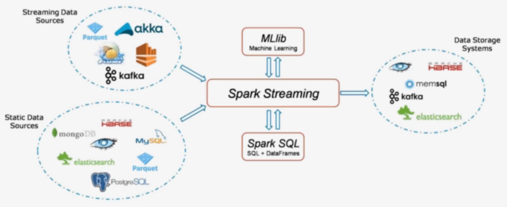

Spark SQL & Spark streaming
推荐系统学习笔记目录
Spark SQL
Spark SQL概念
- Spark SQL is Apache Spark’s module for working with structured data.
- 它是spark中用于处理结构化数据的一个模块
Spark SQL历史
- Hive是目前大数据领域，事实上的数据仓库标准。
- Shark：shark底层使用spark的基于内存的计算模型，从而让性能比Hive提升了数倍到上百倍。
- 底层很多东西还是依赖于Hive，修改了内存管理、物理计划、执行三个模块
- 2014年6月1日的时候，Spark宣布了不再开发Shark，全面转向Spark SQL的开发
Spark SQL优势
- Write Less Code

- Performance
python操作RDD，转换为可执行代码，运行在java虚拟机，涉及两个不同语言引擎之间的切换，进行进程间 通信很耗费性能。
DataFrame
- 是RDD为基础的分布式数据集，类似于传统关系型数据库的二维表，dataframe记录了对应列的名称和类型
- dataFrame引入schema和off-heap(使用操作系统层面上的内存)
- 1、解决了RDD的缺点
- 序列化和反序列化开销大
- 频繁的创建和销毁对象造成大量的GC
- 2、丢失了RDD的优点
- RDD编译时进行类型检查
- RDD具有面向对象编程的特性
用scala/python编写的RDD比Spark SQL编写转换的RDD慢，涉及到执行计划
- CatalystOptimizer：Catalyst优化器
- ProjectTungsten：钨丝计划，为了提高RDD的效率而制定的计划
- Code gen：代码生成器
直接编写RDD也可以自实现优化代码，但是远不及SparkSQL前面的优化操作后转换的RDD效率高，快1倍左右
优化引擎：类似mysql等关系型数据库基于成本的优化器
首先执行逻辑执行计划，然后转换为物理执行计划(选择成本最小的)，通过Code Generation最终生成为RDD
Language-independent API
用任何语言编写生成的RDD都一样，而使用spark-core编写的RDD，不同的语言生成不同的RDD
Schema
结构化数据，可以直接看出数据的详情
在RDD中无法看出，解释性不强，无法告诉引擎信息，没法详细优化。
**为什么要学习sparksql **
sparksql特性
- 1、易整合
- 2、统一的数据源访问
- 3、兼容hive
- 4、提供了标准的数据库连接（jdbc/odbc）
DataFrame
介绍
在Spark语义中，DataFrame是一个分布式的行集合，可以想象为一个关系型数据库的表，或者一个带有列名的Excel表格。它和RDD一样，有这样一些特点：
- Immuatable：一旦RDD、DataFrame被创建，就不能更改，只能通过transformation生成新的RDD、DataFrame
- Lazy Evaluations：只有action才会触发Transformation的执行
- Distributed：DataFrame和RDD一样都是分布式的
- dataframe和dataset统一，dataframe只是dataset[ROW]的类型别名。由于Python是弱类型语言，只能使用DataFrame
DataFrame vs RDD
- RDD：分布式的对象的集合，Spark并不知道对象的详细模式信息
- DataFrame：分布式的Row对象的集合，其提供了由列组成的详细模式信息，使得Spark SQL可以进行某些形式的执行优化。
- DataFrame和普通的RDD的逻辑框架区别如下所示：
左侧的RDD Spark框架本身不了解 Person类的内部结构。
右侧的DataFrame提供了详细的结构信息（schema——每列的名称，类型）
DataFrame还配套了新的操作数据的方法，DataFrame API（如df.select())和SQL(select id, name from xx_table where …)。
DataFrame还引入了off-heap,意味着JVM堆以外的内存, 这些内存直接受操作系统管理（而不是JVM）。
RDD是分布式的Java对象的集合。DataFrame是分布式的Row对象的集合。DataFrame除了提供了比RDD更丰富的算子以外，更重要的特点是提升执行效率、减少数据读取以及执行计划的优化。
DataFrame的抽象后，我们处理数据更加简单了，甚至可以用SQL来处理数据了
通过DataFrame API或SQL处理数据，会自动经过Spark 优化器（Catalyst）的优化，即使你写的程序或SQL不仅高效，也可以运行的很快。
DataFrame相当于是一个带着schema的RDD
Pandas DataFrame vs Spark DataFrame
- Cluster Parallel：集群并行执行
- Lazy Evaluations: 只有action才会触发Transformation的执行
- Immutable：不可更改
- Pandas rich API：比Spark SQL api丰富
创建DataFrame
创建dataFrame的步骤
调用方法例如：spark.read.xxx方法其他方式创建dataframe
createDataFrame：pandas dataframe、list、RDD
数据源：RDD、csv、json、parquet、orc、jdbc
1
2
3
4
5
6
7
8
9
10
11
12
13
14
15
16
17
18
19
20
21
22
23
24
25
26
27
28
29
30
31
32
33jsonDF = spark.read.json("xxx.json")
jsonDF = spark.read.format('json').load('xxx.json')
parquetDF = spark.read.parquet("xxx.parquet")
jdbcDF = spark.read.format("jdbc").option("url","jdbc:mysql://localhost:3306/db_name").option("dbtable","table_name").option("user","xxx").option("password","xxx").load()
PNG
- Transformation:延迟性操作
- action：立即操作

## DataFrame API实现
**基于RDD创建**
```python
from pyspark.sql import SparkSession
from pyspark.sql import Row
spark = SparkSession.builder.appName('test').getOrCreate()
sc = spark.sparkContext
# spark.conf.set("spark.sql.shuffle.partitions", 6)
# ================直接创建==========================
l = [('Ankit',25),('Jalfaizy',22),('saurabh',20),('Bala',26)]
rdd = sc.parallelize(l)
#为数据添加列名
people = rdd.map(lambda x: Row(name=x[0], age=int(x[1])))
#创建DataFrame
schemaPeople = spark.createDataFrame(people)
从csv中读取数据
1 | # ==================从csv读取====================== |
增加一列
1 | # ===============增加一列(或者替换) withColumn=========== |
删除一列
1 | # ==========删除一列 drop========================= |
统计信息
1 | #================ 统计信息 describe================ |
提取部分列
1 | # ===============提取部分列 select============== |
基本统计功能
1 | # ==================基本统计功能 distinct count===== |
分组统计
1 | # 分组统计 groupby(colname).agg({'col':'fun','col2':'fun2'}) |
自定义的汇总方法
1 | # 自定义的汇总方法 |
拆分数据集
1 | #====================数据集拆成两部分 randomSplit =========== |
采样数据
1 | # ================采样数据 sample=========== |
查看两个数据集在类别上的差异
1 | #查看两个数据集在类别上的差异 subtract，确保训练数据集覆盖了所有分类 |
交叉表
1 | # ================交叉表 crosstab============= |
udf
udf：自定义函数
1 | #================== 综合案例 + udf================ |
JSON数据的处理
介绍
JSON数据
Spark SQL can automatically infer the schema of a JSON dataset and load it as a DataFrame
Spark SQL能够自动将JSON数据集以结构化的形式加载为一个DataFrame
This conversion can be done using SparkSession.read.json on a JSON file
读取一个JSON文件可以用SparkSession.read.json方法
从JSON到DataFrame
指定DataFrame的schema
- 通过反射自动推断，适合静态数据
- 程序指定，适合程序运行中动态生成的数据
加载json数据
1 | #使用内部的schema |
嵌套结构的JSON
重要的方法
- get_json_object
- get_json
- explode
实践
静态json数据的读取和操作
无嵌套结构的json数据
1 | from pyspark.sql import SparkSession |
从json字符串数组得到DataFrame
1 | # 从json字符串数组得到rdd有两种方法 |
直接从文件生成DataFrame
1 | # -- 直接从文件生成DataFrame |
动态json数据的读取和操作
指定DataFrame的Schema
3.1节中的例子为通过反射自动推断schema，适合静态数据
下面我们来讲解如何进行程序指定schema
没有嵌套结构的json
1 | jsonString = [ |
带有嵌套结构的json
1 | from pyspark.sql.types import * |
数据清洗
前面我们处理的数据实际上都是已经被处理好的规整数据，但是在大数据整个生产过程中，需要先对数据进行数据清洗，将杂乱无章的数据整理为符合后面处理要求的规整数据。
数据去重
1 | ''' |
缺失值处理
1 | ''' |
异常值处理
1 | ''' |
sparkStreaming
sparkStreaming概述
SparkStreaming是什么
它是一个可扩展，高吞吐具有容错性的流式计算框架
吞吐量：单位时间内成功传输数据的数量
之前我们接触的spark-core和spark-sql都是处理属于离线批处理任务，数据一般都是在固定位置上，通常我们写好一个脚本，每天定时去处理数据，计算，保存数据结果。这类任务通常是T+1(一天一个任务)，对实时性要求不高。

但在企业中存在很多实时性处理的需求，例如：双十一的京东阿里，通常会做一个实时的数据大屏，显示实时订单。这种情况下，对数据实时性要求较高，仅仅能够容忍到延迟1分钟或几秒钟。
实时计算框架对比
Storm
- 流式计算框架
- 以record为单位处理数据
- 也支持micro-batch方式（Trident）
Spark
- 批处理计算框架
- 以RDD为单位处理数据
- 支持micro-batch流式处理数据（Spark Streaming）
对比：
- 吞吐量：Spark Streaming优于Storm
- 延迟：Spark Streaming差于Storm
SparkStreaming的组件
- Streaming Context
- 一旦一个Context已经启动(调用了Streaming Context的start()),就不能有新的流算子(Dstream)建立或者是添加到context中
- 一旦一个context已经停止,不能重新启动(Streaming Context调用了stop方法之后 就不能再次调 start())
- 在JVM(java虚拟机)中, 同一时间只能有一个Streaming Context处于活跃状态, 一个SparkContext创建一个Streaming Context
- 在Streaming Context上调用Stop方法, 也会关闭SparkContext对象, 如果只想仅关闭Streaming Context对象,设置stop()的可选参数为false
- 一个SparkContext对象可以重复利用去创建多个Streaming Context对象(不关闭SparkContext前提下), 但是需要关一个再开下一个
- DStream (离散流)
- 代表一个连续的数据流
- 在内部, DStream由一系列连续的RDD组成
- DStreams中的每个RDD都包含确定时间间隔内的数据
- 任何对DStreams的操作都转换成了对DStreams隐含的RDD的操作
- 数据源
- 基本源
- TCP/IP Socket
- FileSystem
- 高级源
- Kafka
- Flume
- 基本源
Spark Streaming编码实践
Spark Streaming编码步骤：
- 创建一个StreamingContext
- 从StreamingContext中创建一个数据对象
- 对数据对象进行Transformations操作
- 输出结果
- 开始和停止
利用Spark Streaming实现WordCount
需求：监听某个端口上的网络数据，实时统计出现的不同单词个数。
- 需要安装一个nc工具：sudo yum install -y nc
- 执行指令：nc -lk 9999 -v
1 | import os |
可视化查看效果：http://192.168.199.188:4040
点击streaming，查看效果
Spark Streaming的状态操作
在Spark Streaming中存在两种状态操作
- UpdateStateByKey
- Windows操作
使用有状态的transformation，需要开启Checkpoint
- spark streaming 的容错机制
- 它将足够多的信息checkpoint到某些具备容错性的存储系统如hdfs上，以便出错时能够迅速恢复
updateStateByKey
Spark Streaming实现的是一个实时批处理操作，每隔一段时间将数据进行打包，封装成RDD，是无状态的。
无状态：指的是每个时间片段的数据之间是没有关联的。
需求：想要将一个大时间段（1天），即多个小时间段的数据内的数据持续进行累积操作
一般超过一天都是用RDD或Spark SQL来进行离线批处理
如果没有UpdateStateByKey，我们需要将每一秒的数据计算好放入mysql中取，再用mysql来进行统计计算
Spark Streaming中提供这种状态保护机制，即updateStateByKey
步骤：
- 首先，要定义一个state，可以是任意的数据类型
- 其次，要定义state更新函数–指定一个函数如何使用之前的state和新值来更新state
- 对于每个batch，Spark都会为每个之前已经存在的key去应用一次state更新函数，无论这个key在batch中是否有新的数据。如果state更新函数返回none，那么key对应的state就会被删除
- 对于每个新出现的key，也会执行state更新函数
举例：词统计。
案例：updateStateByKey
需求：监听网络端口的数据，获取到每个批次的出现的单词数量，并且需要把每个批次的信息保留下来
代码
1 | import os |
Windows
- 窗口长度L：运算的数据量
- 滑动间隔G：控制每隔多长时间做一次运算
每隔G秒，统计最近L秒的数据

操作细节
- Window操作是基于窗口长度和滑动间隔来工作的
- 窗口的长度控制考虑前几批次数据量
- 默认为批处理的滑动间隔来确定计算结果的频率
相关函数

- Smart computation
- invAddFunc
reduceByKeyAndWindow(func,invFunc,windowLength,slideInterval,[num,Tasks])
func:正向操作，类似于updateStateByKey
invFunc：反向操作
例如在热词时，在上一个窗口中可能是热词，这个一个窗口中可能不是热词，就需要在这个窗口中把该次剔除掉
典型案例：热点搜索词滑动统计，每隔10秒，统计最近60秒钟的搜索词的搜索频次，并打印出最靠前的3个搜索词出现次数。

案例
监听网络端口的数据，每隔3秒统计前6秒出现的单词数量
1 | import os |
Spark Streaming对接Kafka
对接数据的两种方式
在前面的案例中，我们监听了来自网络端口的数据，实现了WordCount，但是在实际开发中并不是这样。我们更多的是接收来自高级数据源的数据，例如Kafka。
下面我们来介绍如何利用Spark Streaming对接Kafka

以下两种方式都是为了数据可靠性：
- Receiver-based Approach：由Receiver来对接数据，Receiver接收到数据后会将日志预先写入到hdfs上（WAL），同时也会将数据做副本传输到其他的Worker节点。在读取数据的过程中，Receiver是从Zookeeper中获取数据的偏移信息。
- Direct Approach（No Receivers）：没有Receiver接收信息，由Spark Streaming直接对接Kafka的broker，获取数据和数据的偏移信息。
上述两种方式中，Direct Approach方式更加可靠，不需要Spark Streaming自己去保证维护数据的可靠性，而是由善于处理这类工作的Kafka来做。
对应代码
- KafkaUtils.createStream(ssc,zkQuorum,”spark-streaming-consumer”,{topic:1})
- KafkaUtils.createDirectStream(ssc,[topic],{“metadata.broker.list”:’localhost:9092’})
Direct API的好处
- 简化的并行：在Receiver的方式中我们提到创建多个Receiver之后利用union来合并成一个Dstream的方式提高数据传输并行度。而在Direct方式中，Kafka中的partition与RDD中的partition是一一对应的并行读取Kafka数据，这种映射关系也更利于理解和优化。
- 高效：在Receiver的方式中，为了达到0数据丢失需要将数据存入Write Ahead Log中，这样在Kafka和日志中就保存了两份数据，浪费！而第二种方式不存在这个问题，只要我们Kafka的数据保留时间足够长，我们都能够从Kafka进行数据恢复。
- 精确一次：在Receiver的方式中，使用的是Kafka的高阶API接口从Zookeeper中获取offset值，这也是传统的从Kafka中读取数据的方式，但由于Spark Streaming消费的数据和Zookeeper中记录的offset不同步，这种方式偶尔会造成数据重复消费。而第二种方式，直接使用了简单的低阶Kafka API，Offsets则利用Spark Streaming的checkpoints进行记录，消除了这种不一致性。
准备工作
步骤：
配置spark streaming kafka开发环境
- 下载spark streaming集成kafka的jar包
spark-streaming-kafka-0-8-assembly_2.11-2.3.0.jar
- 下载spark streaming集成kafka的jar包
- 将jar包放置到spark的jars目录下
- 编辑spark/conf目录下的spark-defaults.conf，添加如下两条配置
1
2
3=$SPAKR_HOME/jars/spark-streaming-kafka-0-8-assembly_2.11-2.3.0.jar
=$SPARK_HOME/jars/spark-streaming-kafka-0-8-assembly_2.11-2.3.0.jar
#driver和executor对应的两个路径一致
测试配置是否成功
启动zookeeper
1
zkServer.sh start
启动kafka
1
kafka-server-start.sh config/server.properties
创建topic
bin/kafka-topics.sh –create –zookeeper localhost:2181 –replication-factor 1 –partitions 1 –topic test
replication-factor：副本数量
partitions：分区数量
出现Created topic “test”，说明创建成功
查看所有topic
- bin/kafka-topics.sh –list –zookeeper localhost:2181
通过Pycharm远程连接Centos 创建代码
通过KafkaUtils 成功连接Kafka 创建DStream对象说明连接成功
1
2
3
4
5
6
7
8
9
10
11
12
13
14
15
16
17
18
19
20
21import os
# 配置spark driver和pyspark运行时，所使用的python解释器路径
PYSPARK_PYTHON = "/home/hadoop/miniconda3/envs/datapy365spark23/bin/python"
JAVA_HOME='/home/hadoop/app/jdk1.8.0_191'
SPARK_HOME = "/home/hadoop/app/spark-2.3.0-bin-2.6.0-cdh5.7.0"
# 当存在多个版本时，不指定很可能会导致出错
os.environ["PYSPARK_PYTHON"] = PYSPARK_PYTHON
os.environ["PYSPARK_DRIVER_PYTHON"] = PYSPARK_PYTHON
os.environ['JAVA_HOME']=JAVA_HOME
os.environ["SPARK_HOME"] = SPARK_HOME
from pyspark.streaming import StreamingContext
from pyspark.streaming.kafka import KafkaUtils
from pyspark.sql.session import SparkSession
sc = sparkContext（'master[2]','kafkastreamingtest'
ssc = StreamingContext(sc,3)
#createDirectStream 连接kafka数据源获取数据
# 参数1 streamingcontext
#参数2 topic的名字
# 参数3 kafka broker地址
ks = KafkaUtils.createDirectStream(ssc,["topic1"],{"metadata.broker.list":"localhost:9092"})
案例实现
需求：利用Spark Streaming不断处理来自Kafka生产者生产的数据，并统计出现的单词数量
- 编写producer.py，用于生产数据
1
2
3
4
5
6
7
8
9
10
11
12
13from kafka import KafkaProducer
import time
#创建KafkaProducer，连接broker
producer = KafkaProducer(bootstrap_servers='localhost:9092')
#每隔一段时间发送一端字符串数据到broker
def send_data():
for i in range(60):
# (key,value) 参数2 是value
producer.send('topic_name',"hello,kafka,spark,streaming,kafka")
time.sleep(2)
send_data()- 编辑Spark Streaming代码，统计单词出现的数量
1
2
3
4
5
6
7
8
9
10
11
12
13
14
15
16
17
18
19
20
21
22
23
24
25
26
27
28
29
30
31from pyspark.streaming import StreamingContext
from pyspark.streaming.kafka import KafkaUtils
from pyspark.sql.session import SparkSession
topic="topic_name"
spark = SparkSession.builder.master("local[2]").getOrCreate()
sc = spark.sparkContext
ssc = StreamingContext(sc,3)
#创建direct连接，指定要连接的topic和broker地址
ks = KafkaUtils.createDirectStream(ssc,[topic],{"metadata.broker.list":"localhost:9092"})
#(None,内容)
ks.pprint()
#（key,value)
#以下代码每操作一次，就打印输出一次
lines = ks.map(lambda x:x[1])
lines.pprint()
words = lines.flatMap(lambda line:line.split(","))
#words.pprint()
pairs = words.map(lambda word:(word,1))
#pairs.pprint()
counts = pairs.reduceByKey(lambda x,y:x+y)
counts.pprint()
ssc.start()
#等待计算结束
ssc.awaitTermination()- 开启Spark Streaming消费数据，将产生的日志结果存储到日志中
spark-submit xxx.py>a.log
- 开启producer.py，生产数据
python3 producer.py
- 通过浏览器观察运算过程
- 分析生成的日志内容
1
2
3
4
5
6
7
8
9
10
11
12
13
14
15
16
17
18
19
20
21
22
23
24
25
26
27
28
29
30
31
32
33
34
35
36
37
38
39
40
41
42
43
44
45
46
47
48
49
50
51
52
53
54
55
56
57-------------------------------------------
Time: 2018-12-11 01:31:21
-------------------------------------------
(None, 'hello,kafka,spark,streaming,kafka')
(None, 'hello,kafka,spark,streaming,kafka')
(None, 'hello,kafka,spark,streaming,kafka')
(None, 'hello,kafka,spark,streaming,kafka')
-------------------------------------------
Time: 2018-12-11 01:02:33
-------------------------------------------
hello,kafka,spark,streaming,kafka
hello,kafka,spark,streaming,kafka
-------------------------------------------
Time: 2018-12-11 01:02:33
-------------------------------------------
hello
kafka
spark
streaming
kafka
hello
kafka
spark
streaming
kafka
-------------------------------------------
Time: 2018-12-11 01:02:33
-------------------------------------------
('hello', 1)
('kafka', 1)
('spark', 1)
('streaming', 1)
('kafka', 1)
('hello', 1)
('kafka', 1)
('spark', 1)
('streaming', 1)
('kafka', 1)
-------------------------------------------
Time: 2018-12-11 01:02:33
-------------------------------------------
('streaming', 2)
('hello', 2)
('kafka', 4)
('spark', 2)
-------------------------------------------
Time: 2018-12-11 01:02:36
-------------------------------------------
-------------------------------------------
Time: 2018-12-11 01:02:36
-------------------------------------------
Spark Streaming对接flume
flume作为日志实时采集的框架，可以与SparkStreaming实时处理框架进行对接，flume实时产生数据，sparkStreaming做实时处理。
Spark Streaming对接FlumeNG有两种方式，一种是FlumeNG将消息Push推给Spark Streaming，还有一种是Spark Streaming从flume 中Pull拉取数据。
Pull方式
- 安装flume1.6以上
- 下载依赖包
spark-streaming-flume-assembly_2.11-2.3.0.jar放入到flume的lib目录下
- 写flume的agent，注意既然是拉取的方式，那么flume向自己所在的机器上产数据就行
- 编写flume-pull.conf配置文件
1
2
3
4
5
6
7
8
9
10
11
12
13
14
15
16
17
18
19
20= netcat-source
= spark-sink
= memory-channel
# source
= netcat
= localhost
= 44444
# Describe the sink
= org.apache.spark.streaming.flume.sink.SparkSink
= localhost
= 41414
# Use a channel which buffers events in memory
= memory
# Bind the source and sink to the channel
= memory-channel
=memory-channel5，启动flume
flume-ng agent -n simple-agent -f flume-pull.conf -Dflume.root.logger=INFO,console
6，编写word count代码
代码：
1 | from pyspark import SparkContext |
启动
bin/spark-submit --jars xxx/spark-streaming-flume-assembly_2.11-2.3.0.jar xxx/flume_pull.py
push方式
大部分操作和之前一致
flume配置
1 | = netcat-source |
代码：
1 | from pyspark import SparkContext |